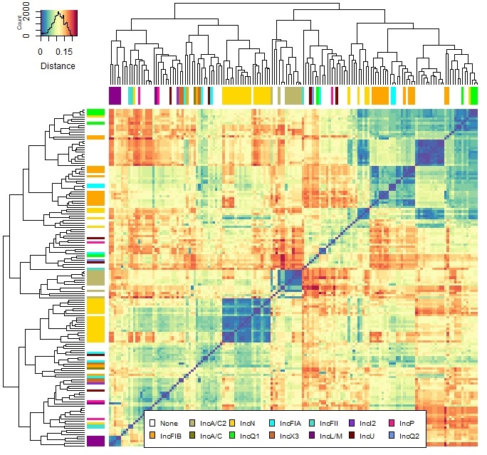

Distance based heatmap.2
- tutorial to create a distance based heatmap
- fast distance estimation via
mash - plotting via
R - Another good guide about heatmap.2 can be found here
Distance via mash
- see github here
- see example below with a folder full of fasta files
# better/faster as a blast all versus all
mash sketch -o reference *.fasta
mash info reference.msh
mash dist reference.msh *.fasta > results.tsv
# add a header to first line for the R script
printf "binA\tbinB\tdistance\tevalue\tX1000\n" > results_representatives.tsv
cat results.tsv >> results_representatives.tsv
- this creates a
results.tsvfor R - this file was modified afterwards
- the accession numbers were renamed and metadata was added to each name, e.g.
binA_11_IncA - important if you want to add colors to each branch (see picture below)
Plotting in R
- step by step in R
- example picture:

Dependencies
- installing and loading dependencies
source("https://bioconductor.org/biocLite.R")
biocLite("gplots")
library(reshape2);packageVersion("reshape2")
library(RColorBrewer);packageVersion("RColorBrewer")
library("gplots");packageVersion("gplots")
- load data and create matrix
- headers of the file are binA, binB and distance
setwd("<path to file>")
df.results <- read.table("results.tsv", header = T, sep = "\t")
matrix.results <- acast(df.results, binA~binB, value.var = "distance")
Optional meta data
- optional step to add colors to branches
- greps certain values in the name to give it a color
- meta data has to be added to the name (e.g. accessionnumber_metadata)
inc_colour <- unlist(lapply(rownames(matrix.results), function(x){
if (grepl("no", x)) "#FFFFFF" # white
else if (grepl("IncFIB", x))"#FFA500" # orange
else if (grepl("IncA/C2", x))"#BDB76B" # dark khaki
else if (grepl("IncA/C", x))"#808000" # olive
else if (grepl("IncN", x))"#FFD700" # gold
else if (grepl("IncQ1", x))"#00FF00" # lime
else if (grepl("IncFIA", x))"#00FFFF" # cyan
else if (grepl("IncX3", x))"#D2691E" # chocolate
else if (grepl("IncFII", x))"#40E0D0" # turquoise
else if (grepl("IncL/M", x))"#8B008B" # dark magenta
else if (grepl("IncI2", x))"#8A2BE2" # blue violet
else if (grepl("IncU", x))"#800000" # maroon
else if (grepl("IncP", x))"#FF1493" # deep pink
else if (grepl("IncQ2", x))"#6495ED" # corn flower blue
}))
# important length has to be similar to matrix columns and rows
length(inc_colour)
Plotting data
- create plot via
heatmap2
# same color gradient as the image from above
Colors <- rev(brewer.pal(11, "Spectral")) # use spectral
color.spek <- colorRampPalette(Colors)(30)
# use this if you want 0 set to white (change the heatmap2 below)
color.zerow <- c("#F8F8F8", colorRampPalette(Colors)(n=900))
# plotting data
heatmap.2(matrix.plasmids, trace = "none", tracecol = "#000000",
col = color.spek, margins = c(11, 7.5), keysize = 0.8,
labRow = FALSE, labCol = FALSE, na.rm = T,
key.title = NA, key.xlab = "Distance",
ColSideColors = inc_colour, RowSideColors = inc_colour)
- add legend to picture
# add name and add colors
leg.name <- c("None", "IncFIB", "IncA/C2", "IncA/C")
leg.color <- c("#FFFFFF", "#FFA500", "#BDB76B", "#808000")
# add legend to heatmap
legend("bottom", legend = paste(INC_names), fill = INC_names_legend, cex = 0.65, ncol = 7, horiz = F)
- save as vector graphic
# starts saving everything to svg
svg("Heatmap_spectral.svg", height = 9, width = 9)
# add here the ploting functions e.g.
heatmap.2(.......) # see above
legend(....)
# stops saving everything to svg
dev.off()